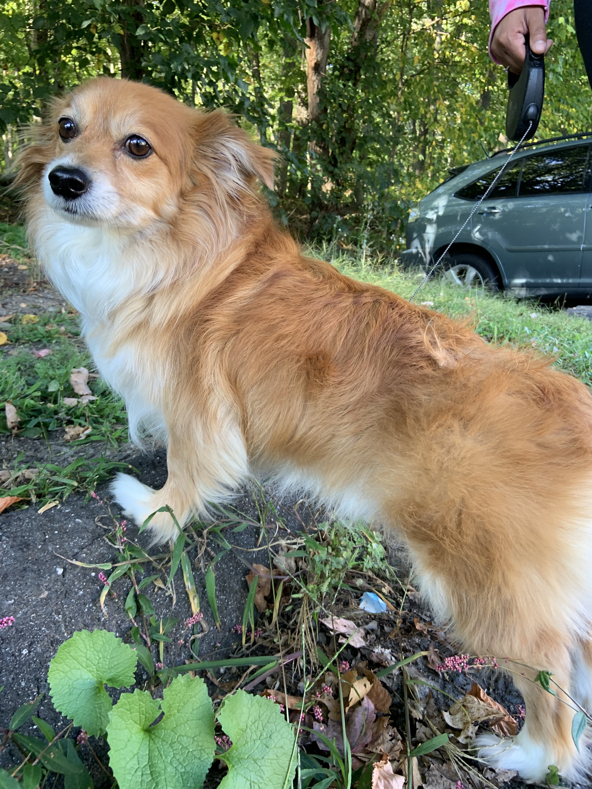

As a dog owner myself, after talking to my dog like he's my best friend, I found myself wondering if he understannd my rant about having a closet full of clothes and not having anything to wear. But then again some humans won't understand that
Since we live in the Google era, I did what any other 20 year old with a dog and who is curently procxrastinating does, I googled, "can my dog under me?" and turns out...
he just might.
